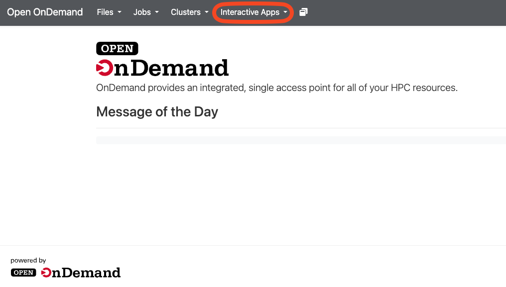
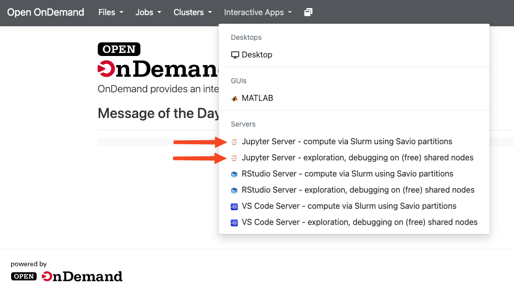
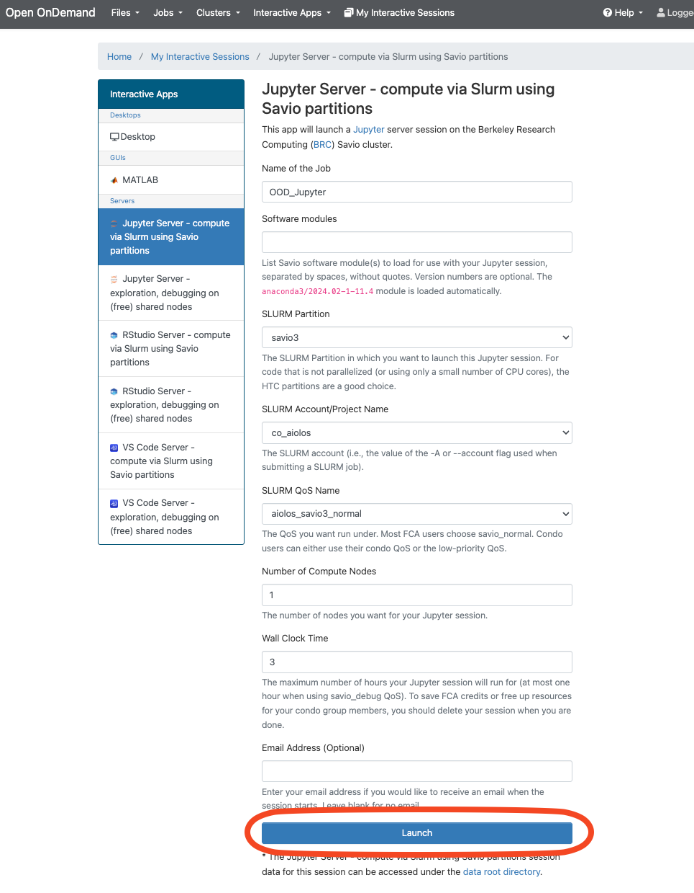
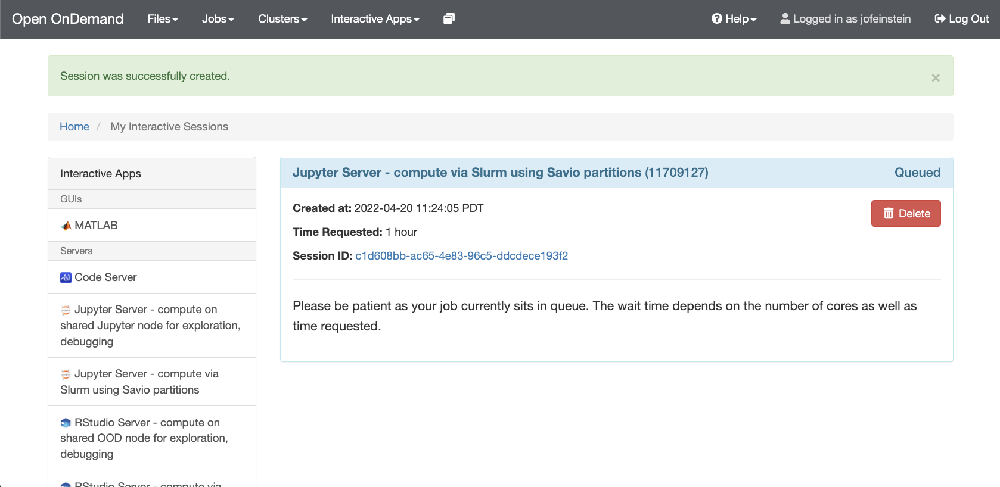
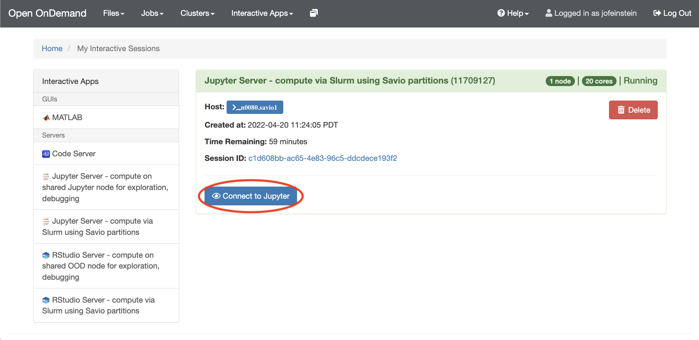

Intro to JupyterLab
Contents
Intro to JupyterLab#
JupyterLab will be our primary method for interacting with the computer. JupyterLab contains a complete environment for interactive scientific computing which runs in your web browser. Jupyter is an open source python project that was started by scientists like yourselves who wanted a more effective way to interact with their computers.
Using Jupyter notebooks via the interactive Open OnDemand service#
Running a notebook via Open OnDemand#
Connect to https://ood.brc.berkeley.edu
Just after logging in with your BRC username and one-time password (OTP), the initial OnDemand screen presents a welcome screen. Click the “Interactive Apps” pulldown. 
Which Jupyter server should I pick?
Heavy or long-running jobs:
Choose “Jupyter Server – compute via Slurm using Savio partitions”. This reserves a dedicated compute node for resource-intensive analyses.Quick tests or light work:
Choose “Jupyter Server – exploration, debugging on (free) shared nodes”. This runs on a shared server (up to 8 GB RAM and a few CPU cores) and doesn’t count against your allocation.

Start your Jupyter session
Keep default job name:
OOD_JupyterLeave Software modules blank (Anaconda is loaded automatically)
Select SLURM Partition:
savio3Select SLURM Account/Project Name:
co_aiolosSelect SLURM QoS Name:
aiolos_savio3_normalSet Number of Compute Nodes to
1Set Wall Clock Time (hours) to
3Click Launch
When your server is ready, click Launch

Connect to your notebook
Once your session status turns Running, click the Connect to Jupyter button. This will open your Jupyter environment in a new browser tab.
 
JupyterLab has excellent documentation. Rather than repeat that documentation here, we point you to their docs. The following pages are particularly relevant:
You will gain experience and familiarity with JupyterLab over the course of the summer.
Markdown#
Throughout the course, we will write rich text documents using Markdown. Here are some useful references on Markdown syntax.
Markdown Guide / Basic Syntax - A more user-friendly syntax guide.